← 返回阅读库 · 原论文目录
论文讲解阅读文档 · 机器人学 · v112
RL-CycleGAN Reinforcement Learning Aware Simulation-To-Real[2006.09001]
视频时长 00:13:57；讲解文字 6,692 字符；提取讲解画面 26 张。按视频原顺序阅读，每段文字保留时间戳。
文字来自整段视频的自动语音转写，按自然停顿分段，并与 PPT / 论文页面 / 演示画面对齐。未将讲解压缩为摘要；术语、数字和口述公式请结合画面及原论文核对。 阅读稿已校正规范部分明确术语误识别；原始逐字稿和每处修改记录另行保留。
讲解画面为源视频截图（640×360），不是可编辑 PPT 文件。全片按每秒 2 帧扫描内容变化，逐步展开页保留；连续动画保留代表画面。清晰度受源视频限制。
下载完整资料包 · 含离线 HTML、PDF、Word、全部 PPT 画面和字幕。
原论文与材料
RL-CycleGAN: Reinforcement Learning Aware Simulation-To-Real · 下载完整 PDF（13 页）
按时间阅读
00:00:00–00:00:09 · 画面 001
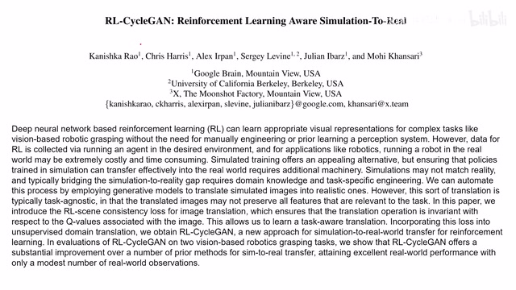
00:00:00–00:00:09 · 画面 001大家好今天我们来介绍 RL-CycleGAN Reinforcement Learning Aware Simulation to Real 这篇论文你看题目是 Simulation to Real 用一个 CycleGAN 的形式把我们的模拟图像变成了接近真实的图像来帮助我们训练 Reinforcement Learning 的 agents 那么在今天的视频我们会首先介绍一下 CycleGAN 非常快速的介绍一下
00:00:09–00:00:10 · 画面 002
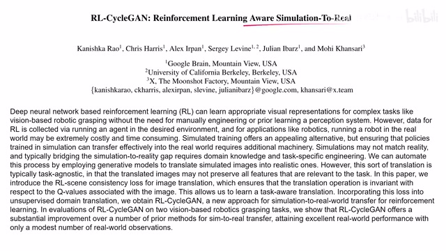
00:00:09–00:00:10 · 画面 00200:00:10–00:00:18 · 画面 003
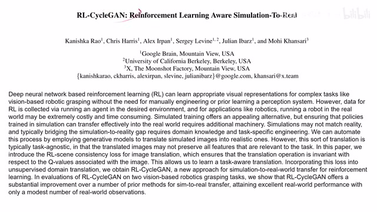
00:00:10–00:00:18 · 画面 00300:00:18–00:00:50 · 画面 004
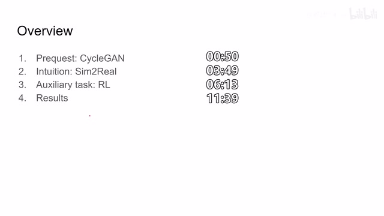
00:00:18–00:00:50 · 画面 004然后就是本文的 sim-to-real 还有就是作者为了提高这个 domain transfer 它的质量在训练 GAN 的时候同时加入这个 reinforcement learning 的任务来取得一个较好的结果那么最后作者汇报了一些基于这种模拟然后加上 domain transfer 这样的一个图像来获得了 RL agent 在实际的环境中的表现那么首先我们来看最基础的也就是 cycleGAN 那么 cycleGAN 来自于这篇文章
00:00:50–00:02:50 · 画面 005
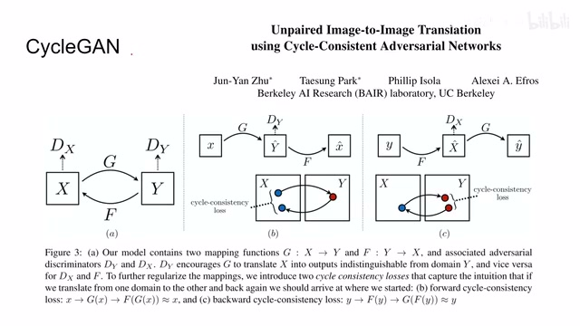
00:00:50–00:02:50 · 画面 005unpaired image to image translation using cycle-consistent adversarial networks 思想呢其实非常简单，假如说我们现在有两个 domain 的图像，一个是 x，一个是 y，那比如说 x 呢是一堆马的图像，y 呢是一堆斑马的图像，它们之间呢不一定是相互匹配的，那区别于一般的 GAN 呢，我现在维护两个 generator，两个 discriminator，那这个 g 呢是把这个 x domain 的图像变换到 y domain
那么 f 呢是把 ydomain 的图像再变回到 xdomain 那么同时呢两个 discriminatordx 和 dy 呢就分别鉴别我们的这一个图像它是不是属于这个 domain 那么在这里呢你其实就可以看成这是两组单独的 GAN 那么一个 generator 对应一个 discriminator 这个 generator 呢对应这个 discriminator 但是呢你如果只是单纯的这样训练呢它会存在另一个问题因为我们的样本呢都是 unpaired也就是说呢，我们并没有说从一个 Domain 的图像有跟它正好对应的这样一个图像，这样是不存在的。那么因此呢，很难保证说我的这个 XDomain 的图像那经过我们 Generator 之后呢，到 YDomain 之后呢，它是那个我们想要的那个图像，而不是说虽然是长得像 YDomain 但是是其他的这么一个图像。那么为了解决这个问题呢，作者这里呢引入了一个叫做 Cycle Consistency Loss。那可以看到呢，从这个图示非常直接。
那比如说我的 x domain 里面的有一个小的小的这个 x 的图像那他经过 generator 之后呢他变化到 y domain 里面到这里那么这里呢他要再经过另一个 generator 再从 y domain 呢给他变回来那么最终呢我们要衡量这个原始的输入图像跟变回来的这个图像他们的之间的这个误差那么通过引入这样的一个 loss 呢，就能够使我们的这个 y domain 的这个变化后的图像呢，跟我们这个 x domain 这个图像它在语义上是要有对应的。毕竟你从 x 到 y 来，它单程不算完，你还得从 y 到 x 回去吗？所以呢，他们的语义信息必须得到保留。那么同理呢，你把 x 和 y 这个情况给它翻转过来，那你可以写在这个 y domain 呢也有一个 cycle consistency loss。那么我们来具体看到作者提供的表达式。那首先呢我们看到这里。
00:02:50–00:03:00 · 画面 006
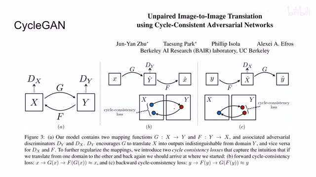
00:02:50–00:03:00 · 画面 00600:03:00–00:03:44 · 画面 007
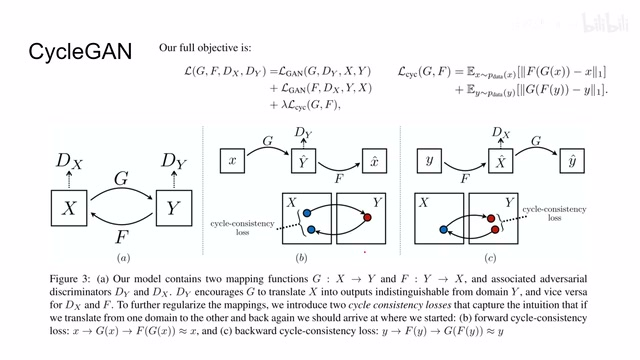
00:03:00–00:03:44 · 画面 007我们的整个的这个 loss 呢，它包括这样三项。那前两项呢就是典型的这个 gan loss，因为我们有两个 generator 和 discriminator，所以呢我们有两个这样的 gan loss。那么第三个呢就是这个 cycle consistency loss，它呢就包括你看我们的 x 从 x 投到 y domain 再投回来这样，然后做一个 l1 distance。那么这个呢也是从 y 投到 x 再投回到 y，那同样的。
那么在论文中呢作者说也是我把这个 L1 normalization 换成其他的形式的 loss 或者说是换成一个 dissolver 它的这个性能呢并没有说显著的提升所以呢我们就用一个简单的方法想做就可以了那么这个呢就是我们的一个 CycleGAN 作为一个背景知识的介绍很有趣的一个设计那么随后呢我们来到本文的这个设计这个 sim-to-real
00:03:44–00:03:45 · 画面 008
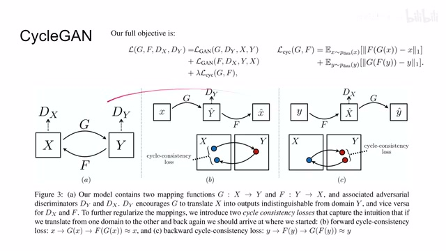
00:03:44–00:03:45 · 画面 00800:03:45–00:03:51 · 画面 009
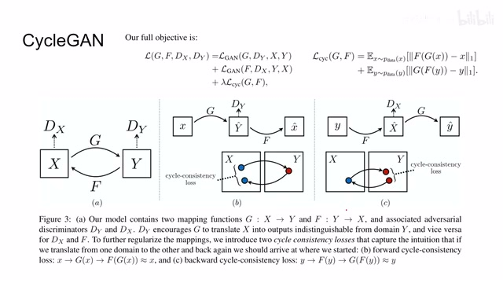
00:03:45–00:03:51 · 画面 00900:03:51–00:05:51 · 画面 010
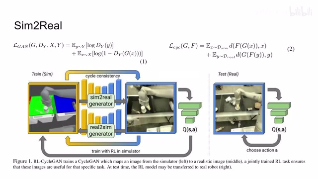
00:03:51–00:05:51 · 画面 010那么我们知道 reinforcement learning 在实际部署中遇到的主要的困难呢其中呢就包括对于我们这个环境的交互它在学习的过程中呢需要大量的与环境的交互特别是你开机器人的情况下这是一个非常贵的情况而且万一没交互好这个砸坏了花花草草对吧砸到小朋友那这可是太不幸了对吧所以呢为了解决这个问题呢我们就想到了说能不能先在这个 simulator 里面我们把这些交互啊学习啊都做好这个 simulator 嘛，你可以开多少个现场都无所谓的，只要你计算资源允许，你想交互多久对吧，而且交互非常快都 ok，而且不用受到说我物理呢去把我们的机器人复位啊这种各种各样的问题。总之，simulator 呢相对于这个真实的物理世界啊，它有太多的优势了。但是呢，它有一个致命的问题，就是我们为了保证这个模拟的这个效率呢，我们的图像呢并不会很拟真，而且并不是所有东西呢我们都模拟的到呢，比如说像光照啊什么的
一个模拟器你说再开个光追这性能下降得多大呢对吧所以呢它就会导致我们的这个模拟器图像呢跟这个现实世界的这个图像呢它始终有一个 gap 这个 gap 呢会导致我们的机器人的这个性能呢 agent 的这个性能呢显著的下降那这是一个很不好的事情那么为了克服这个问题呢坐在这里就非常巧妙的想到了我用这个 simulation to real 其实呢我就可以把它理解成一个这是一个 domain translation 的问题那我把这个 simulation 的 domain 的图像呢 transfer 到这个 real world 这个 domain 里面那这样子我就可以尽情的在这个 simulation 跑跑出来之后呢把我们的图像变成像真实世界的图像一样然后呢交给我们的这个 qnetwork 或者是后面任何的 reinforcement learning 的方法那么这样是不是就可以获得一个与现实世界性能相仿的这样一个 agent 那这个设想真的是非常好
那么为了达成这个设想呢，这里呢，作者就是使用我们之前介绍这个 CycleGAN，那么就从这个 simulation 到 real world，又从这个 real world 对象呢到 simulation，两个 generator，两个 discriminator。那他的 loss 呢，跟之前一样也是包括这个 GAN loss 还有这个 cycle consistency loss。那么到这里呢，这一步呢，他跟我们之前介绍的 CycleGAN 并没有什么区别，只不过呢，这个 domain 一个是这个 simulation domain，另一个呢是这个 real world 这个 domain。
00:05:51–00:06:15 · 画面 011
00:05:51–00:06:15 · 画面 011那么下面呢，就是到这个本文的核心贡献了，就是这个 reinforcement learning 的加入。那么在本文中呢，我们除了依靠这个 discriminator 来提高我们 domain transfer 的它的性能之外呢，这里呢，作者想，我能不能通过这个 reinforcement learning 的任务的加入，能够让我们这个 domain transfer 呢，对我们后面的这个 RL 的学习呢更加有利，或者说呢，从另一个角度去隐式的去监督我们的这个 transfer 的过程。
00:06:15–00:08:15 · 画面 012
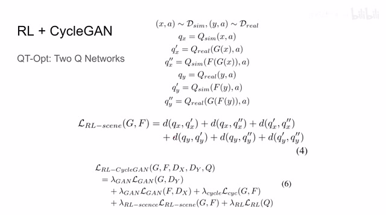
00:06:15–00:08:15 · 画面 012那么它背后的 attention 就是非常简单，假如说你的 simulation 描述了一个状态跟我们的 real world 的一个状态，这两个状态是 identical 是一样的一个状态，那么对于我们的 q network 来说，它给出的 q 值就应该是一样的。如果你 translate 之后的图像得到 q 值跟我们之前输入的图像它的 q 值得出来是不一样的。
那说明你在这个 translate 的过程中肯定是改变了哪些语义信息，而且是对这个 reinforcement learning 非常关键的这些语义信息，那这是不得行的。所以呢，在本文中呢，本文的一个核心的贡献就是我在训练这个 domain translation 在训练这个 cycleGAN 的时候，同时呢加入了这个 reinforcement learning，为我们的 GAN 的训练呢提供一种监督，这个监督是要加引号的，因为它并没有 label。那么具体来看作者是怎么样操作的。
这里呢，作者核心的使用的方法呢是 QT-Opt，因为都是谷歌那帮人做的啊，咱们直接在 QT-Opt 上改改改就行了。但是呢，区别于标准的配置呢，这里呢，我们有两个这个 q networks，那么一个呢是负责处理这个 simulation domain 里面的这个图像，那么另一个呢就是处理 real world domain 里面这个图像他的 q network。那这里呢，为什么那这里为什么作者说要设计两个 q networks 呢。
就是告诉我们说因为这两个 domain 的这个图像的差距呢实在是太大了一个网络呢不太好处理这个事情那么下面呢我们就来看这里呢我们是把我们的这个原始的输入图像啊 action 对吧放到我们的这个 simulation 的这个 q network 里面得到一个 q value 那么把这个原始的图像呢经过这个 translation 变到这个 real domain 里面啊得到另一个 q value 那么 real domain 里面再变回这个 simulation domain
00:08:15–00:09:50 · 画面 013
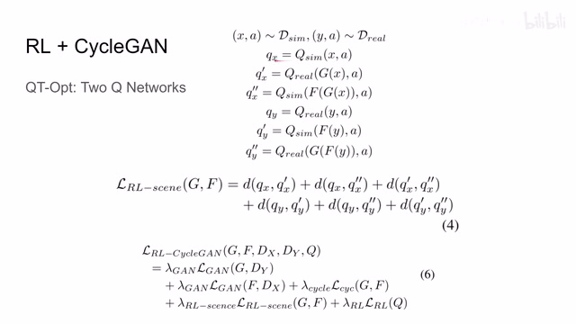
00:08:15–00:09:50 · 画面 013对吧，再得到一个 q value。那显然你这个 q value 和这个 q value 对吧，他们两个的这个值应该是一样的，因为都是在同一个 domain 里面的同一个状态。所以马上你看到呢，这里呢有一个 loss 呢，就是他俩之间的。但是呢，你转念一想，虽然呢我们的这个 x 呢在不同的 domain，但是呢他们表达的语义信息应该是相同的我虽然把它送到了两个不同的这个 q networks 里面，但是呢，他们得到的 q value 应该是一样的。那么因此呢，其实这两个他们的值应该也是一样的。那这两个他们的这个 q 值呢应该也是一样的。所以呢，就多出了这两项。那么这个呢，是我们从 x domain simulation domain 里面采出来的这个样本配上它对应的 action。那么同理呢，我还有在 real world domain 里面采出来的样本。
这个 y，那么一样的呢，我这里也有原味的对吧，translation 一次之后，translation 两次之后对吧，那么这三个 qvalue 它的值呢也应该是一样的。那么但是呢，因为这个 x 和这个 y 呢它们是两个 domain 里面抽出来的，而且呢因为我们指定了说 unpaired，它俩呢不一定保持相同的语义信息，所以你看到了我们并没有约束这两个项目之间它们的 qvalue 的值那么这三个 Q-value 相互相等，这三个 Q-value 相互相等，那么就得到了我们这样一个式子。那么这个题呢，你就可以发挥想象了，你用 l1 l2 啊都可以。作者呢，使用了这个 l2 distance。那么了解了这个 loss 之后呢，我们来看最终本文设计的这个全部的 loss 啊，它包括这个首先是两个 gan loss 加一个 cycle consistency loss，这这个呢就是 cyclegan 的标准配置。然后呢，这个 rl 的这个 loss 那就是这六项。
00:09:50–00:09:51 · 画面 014
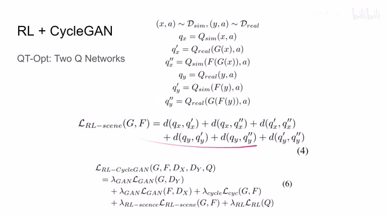
00:09:50–00:09:51 · 画面 01400:09:51–00:10:07 · 画面 015
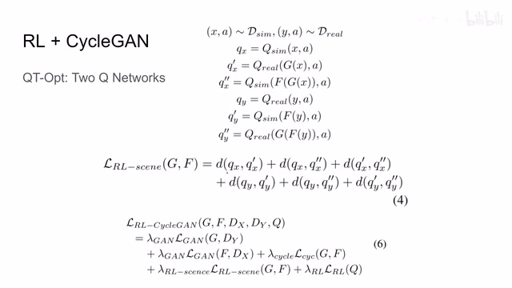
00:09:51–00:10:07 · 画面 01500:10:07–00:10:08 · 画面 016
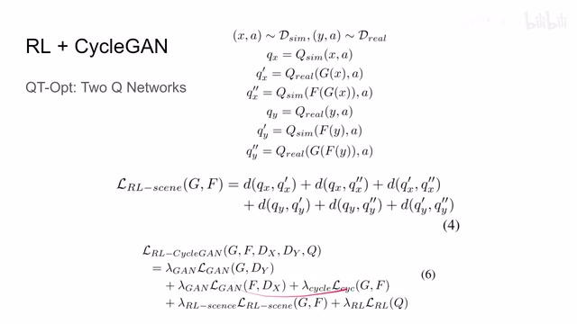
00:10:07–00:10:08 · 画面 01600:10:08–00:10:12 · 画面 017
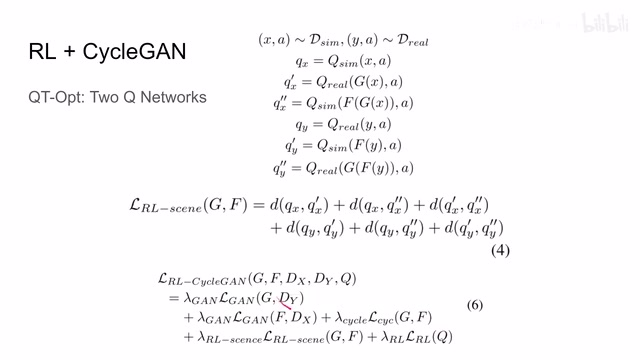
00:10:08–00:10:12 · 画面 01700:10:12–00:10:13 · 画面 018
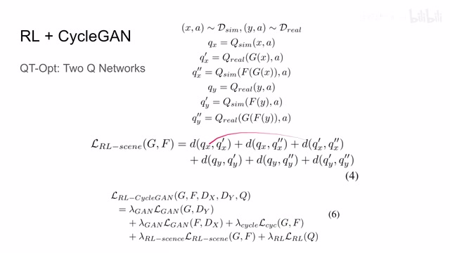
00:10:12–00:10:13 · 画面 01800:10:13–00:10:23 · 画面 019
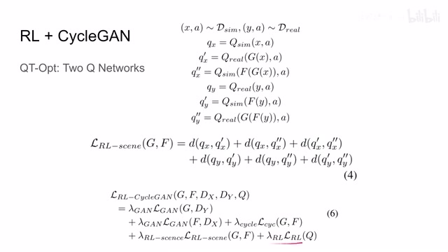
00:10:13–00:10:23 · 画面 019那么最后这个 loss 呢，是我们 train reinforcement learning 的方法的时候呢，用的一个 loss。这个呢，就是用 bellman equation 或者说 td learning 这样做出来的这样一个 loss。而且呢，你发现，而且呢，你发现他把这些 loss 呢都加在一起，说明呢，他这个 reinforcement learning 还有这个 domain translation 是一起在训练。
00:10:23–00:10:24 · 画面 020
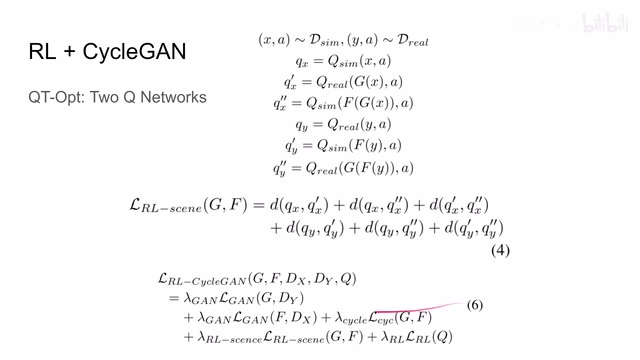
00:10:23–00:10:24 · 画面 02000:10:24–00:10:39 · 画面 021
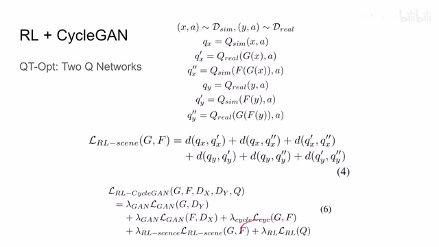
00:10:24–00:10:39 · 画面 021这种设计呢，也不需要我们调度来调度去，比如说先训练一个 translation 啊，再训练一个 reinforcement learning，不需要这样，我们一起做训练对吧。人人有攻略是一个非常直接的处理。那么最后结合这张示意图呢，我们来最后再捋一下对吧。我们的这个 sim-to-real 还有 real to sim 这个，是从 simulation domain 里面取了一个样本对吧。这个过程呢，有 cycle consistency loss 还有我们的 gan loss。
00:10:39–00:10:43 · 画面 022
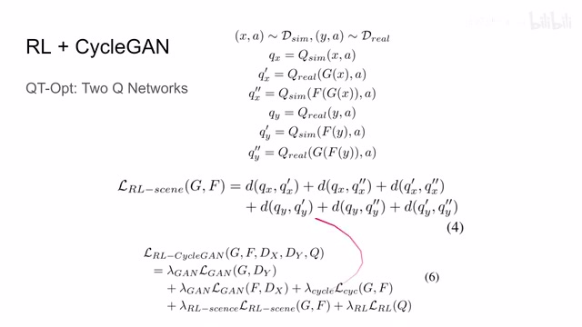
00:10:39–00:10:43 · 画面 02200:10:43–00:11:39 · 画面 023
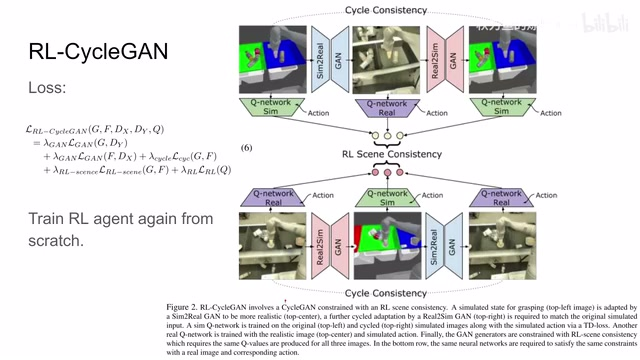
00:10:43–00:11:39 · 画面 023然后呢，下面是从这个真实的世界样本中举的这个样本对吧。我们有这个同样的这个 CycleGAN 的 loss。最后呢，我们加上这个 reinforcement learning 它的本身的 loss，还有呢，我们之前说的这个 q value 它们要相等比一致。那么这个呢，就是本文的核心的贡献。那么此外呢，还有一个小的细节就是说，当我们把这个 CycleGAN 还有这个 reinforcement learning 这个 agent 联合起来一起来训练完了之后呢，我们可以固定住这个 CycleGAN。
然后用它重新训练一个 reinforcement learning 的 agent，这样子可以取得更好的性能。好的，那么本文的核心的思路介绍完了，我们就来看作者的实验的设计。这里主要是两个实验都是抓取，因为 QT-Opt 他们环境从一开始就是为了研究机械臂如何抓取的。第一种配置就是一个盒子抓中间的东西去抓，看看成功率。
00:11:39–00:13:39 · 画面 024
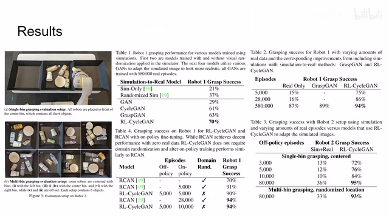
00:11:39–00:13:39 · 画面 024那么第二种配置呢就是我现在有三个盒子都用起来，每个盒子里面都有六件东西，那我去看看它的成功率。这里呢我们看到作者汇报的结果，那如果是使用这个 simulation 的推向的话，在现实世界中的成功率呢非常低，但是呢我们有了这个 domain transfer 之后成功率大增，非常不错的一个数字。那么这边呢研究的是不同真实样本数量对我们成功率的影响，那么显然有 simulation 呢它就是好然后这个表格呢，是汇报了第二种这个实验配置。下面啊，他的这个实验的结果取得相当不错的成绩。那么最后呢，这里呢对比了说我在这个 simulation 训练完 agent 之后呢，再在 real worldfine-tune，在这样一种训练的配置下呢，对比这个 RCAN 啊，他的这个性能。然后呢，本文的方法呢，取得了跟这个 RCAN 相似的结果。这里呢，作者啊给我说。
我们相比于 RCAN 没有 domain randomization 所以说本文的方法还是非常有竞争力的那么总的来说从 simulation 到 real world 这是一个非常巧妙的思路虽然不一定是这篇文章最先提出来的你如果搜 sim2real 之前有很多文章都在做这个事情那么本文最巧妙的贡献就是它用了 reinforcement learning 里面的 q-network用它呢，来确保我们的这个 domain translation 过程中呢，它的语义信息呢不会发生改变。它是一种变相的隐式的这样一种 cycle consistency loss。那么以上呢，就是我对这篇论文的简单分析。说句题外话呢，这个和这个机器人的配置呢，据知情人士透露呢，就是一个小屋里专门人来维护，一排搞算法的人呢也不用管说这个机器人的事，他们呢就对照 API 就可以了。
00:13:39–00:13:57 · 画面 025
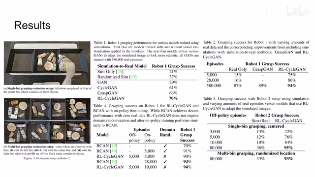
00:13:39–00:13:57 · 画面 025因此据那个伙计说，直到他从谷歌离职他也没有实际的去见过这个图像里的机器人，但是呢他看了这个机器人拍的这个影片呢，他是看的太多了，反正有点意思的这样一个事。那么感谢您的收看，再见
00:13:57–00:13:57 · 画面 026
00:13:57–00:13:57 · 画面 026转写与来源说明 · 0 个自动复核提示
保留 32 个原始语音片段，0 个片段触发自动复核提示。提示仅用于定位可能的术语、重复或识别问题，不等于已确认错误。
讲解画面为源视频截图（640×360），不是可编辑 PPT 文件。全片按每秒 2 帧扫描内容变化，逐步展开页保留；连续动画保留代表画面。清晰度受源视频限制。
原视频：paper/合集_2026-10-16_机器人学/[论文简析]RL-CycleGAN Reinforcement Learning Aware Simulation-To-Real[2006.09001].mp4
SHA-256：0550e16d43114e53901ceee0fd90fe10a6cc4a1cb5b4b663feb5aa2f4fc5eca8
全文按视频语音与画面制作。原论文可从上方链接下载；完整资料包保留全文、原始逐字稿、字幕和校对记录。